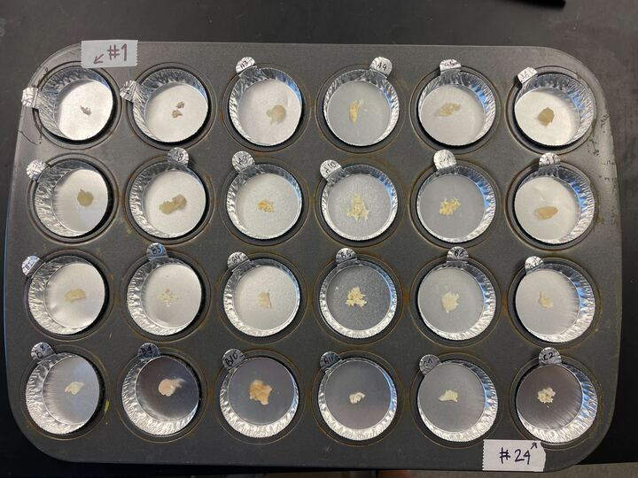
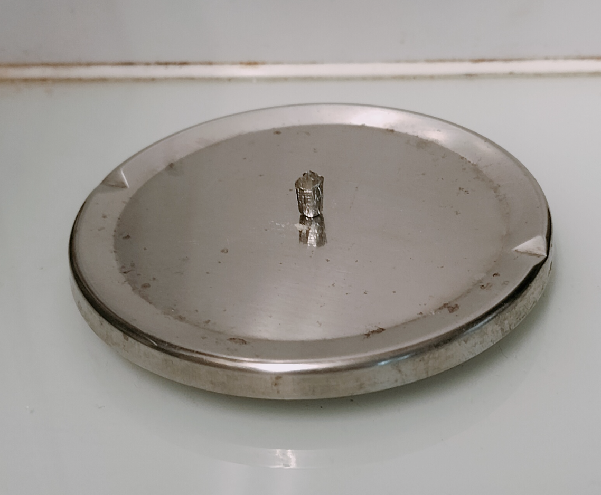
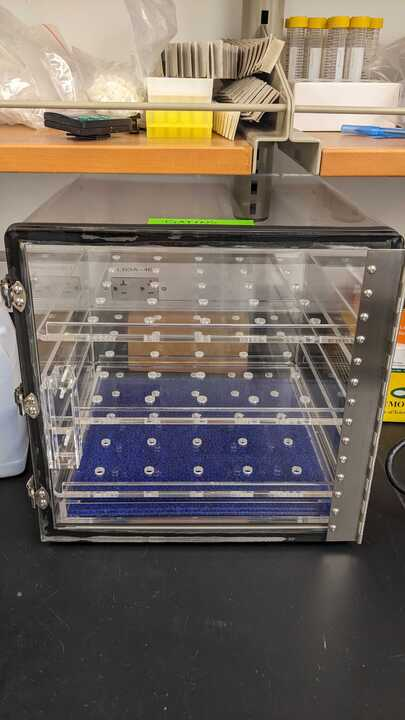

Stable Isotope Protocol
Materials
Protocol
- Clean lab bench, instruments and muffin trays.
- Rinse with tap water
- Spray with 70% ethanol and wipe clean
- Spray with DI water and wipe clean with kim wipe
- Label the muffin tray with BSB and the number of the tray
- Indicate tin #1 (top left) anf #24 (bottom right)
- Label each aluminium weighting dish with its corresponding place on the 96-well plate (example: A1)
- Place the samples in an aluminium weighting dish and place the weighting dish in a muffin tray
- Weight the empty aluminium weighting dish and tare
- Remove each tissue sample from its micro-centrifuge tube
- place the whole tissue or part of it (if superior to 100mg) on a clean aluminium weighting dish
- weight the taken weight
- If sample left put it back in the micro-centrifuge tube
- Put the aluminium weighting dish in its corresponding place on the muffin tray
- Record the number of the tray (e.g. tray 1, 2, etc.), the letter and number of the of the weighting dish, its taken weight and if sample is left or not.
- Clean the forceps (i.e. spray with DI water and 70% ethanol and clean with kimwipe. Do not cross-contaminate samples during this process)
- Once muffin wells in a tray are full, cover the whole tray with a clean piece of aluminum foil to prevent dust / rust from getting in samples

- Allow to dry in a drying oven at 60ºC for a minimum of 48 hours. (in Grabowski lab)

- Check that samples are dry by weighing a couple of samples on a microbalance (3 digits is fine given sample weights are < 1.1mg) about an hour apart
- Clean forceps between samples as above (rinse with DI and wipe with clean kimwipe)
- Grind each tissue sample with a mortar and pestle

- CLEAN mortar and pestle, forceps and other instruments (including spatulas) between each sample (rinse with DI and 70% ethanol and wipe with clean kimwipe)
- Transfer the sample with a clean spatula
- Put the ground tissue back into its micro-centrifuge tube
- Make sure micro-centrifuge tube caps are secured tightly and store samples on a tube rack (labeled with description and date) in a desiccation chamber until sample is weighed.
- Weigh the samples to the nearest 0.001mg (using the microbalance in the Gatins lab).
- Place a 4x6mm tin capsule on the scale and tare (zero) the scale. The microbalance we use does not tare as fast as the Lotterhos Lab scale; be patient. Also recommended to stay still and keep your hands off the counter while it tares.

- Transfer the sample from the micro-centrifuge

- Using a small metal spatula, transfer 0.8 - 1.2 mg (range specified by BU, see note below) of ground animal tissue from the micro-centrifuge tube into the tin capsule and record weight on data sheet.
- What we did is we used a small plastic weighing dish to put all the powder into (can just flip vial upside down over it), then scooped powder from there into the capsule. During this step, I found it easiest to use two spatulas and kind of bunch together some of the powder in the corner of a spatula, so that when you hold it over the capsule and tilt it, the powder on it will fall at once into the opening. With this method, it usually took 1-3 of these small scoops to get to the 0.8 - 1.2 mg range. Close the scale door and check weight between each scoop (again, keep your hands off the counter while the scale adjusts).
- Rinse the spatula with deionized water and 70% ethanol and dry with a kim wipe between each tissue sample.
- Carefully “crush” the tin capsule into a small square by gently applying force using two pairs of forceps
- Ensure that no material will leak from the capsule after it has been crushed, as the loss of material can affect both the isotope and elemental data through incorrect mass determination and subsequent sample-to-sample contamination.
- When folding capsules, please make sure that you first fold over the top to seal the material.
- Then fold and compress the capsule into a small cube. Don’t flatten boat and avoid any sharp points that will snag in autosampler.
- (This step is easiest with curved forceps.)
- After crushing the tin capsule, I usually tested for leaks by shaking it a bit over the black counter and watching to see if any specks appeared. If it leaks, just redo the process with a new capsule.
Tutorial on how to fold the tin capsules:
https://www.youtube.com/watch?v=VfF6yuiKWrA
- Once weighed and crushed, place the sample in the appropriate well of a cell plate, making certain the sample is in the correct well as recorded on the data sheet.
- We use 96-well polystyrene cell plates. Each well has an alpha-numeric position (rows A - H, columns 1-12), thus the first well is A1, the next A2, and so on.
- Once the capsule is in the plate, you can put the rest of the powder away by scooping it back into the vial from the weighing dish and returning the vial to its original position. Then clean the weighing dish and other tools.
- Put both the cell plates and trays of micro-centrifuge tubes containing remaining tissue back in a closed desiccation chamber until you are ready to send them to be processed.

- Label the plate with:
- PI first/last name
- Northeastern University Marine Science Center
- Project title
- Tray n / n
- PI contact into (email and cell)
- When all samples are ready to be sent out, contact Bob Michener at BU about sending them or bringing them to the BU stable isotope lab
BUSIL-EA-Sample-Submission.xls
If you have any questions about the process, you can message Fin or Alice on Slack.